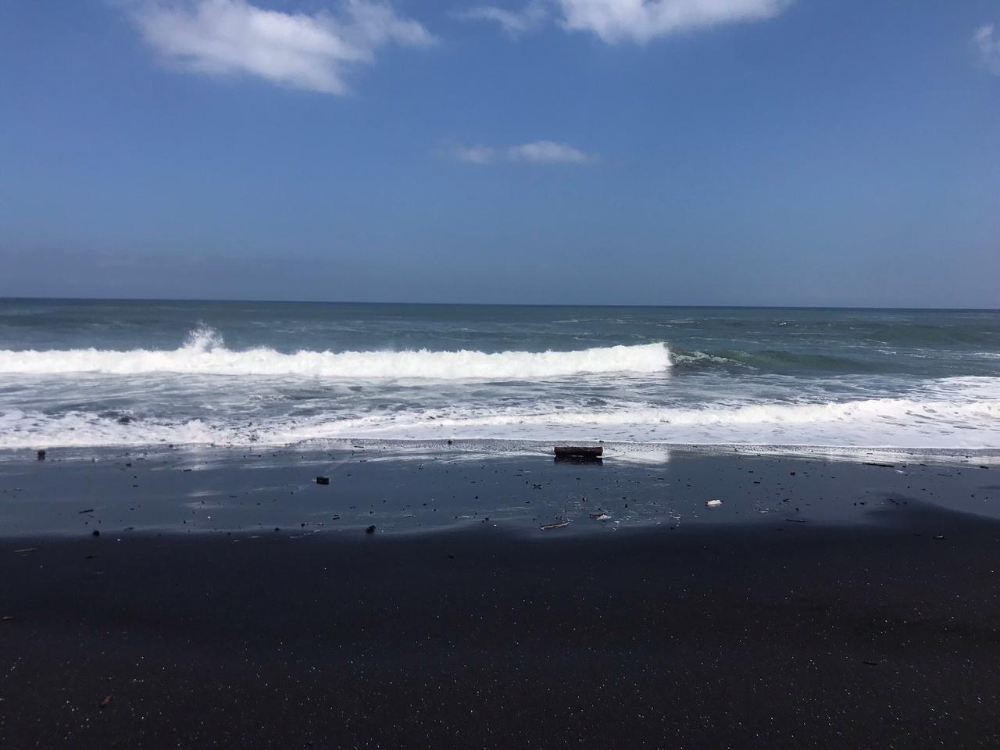
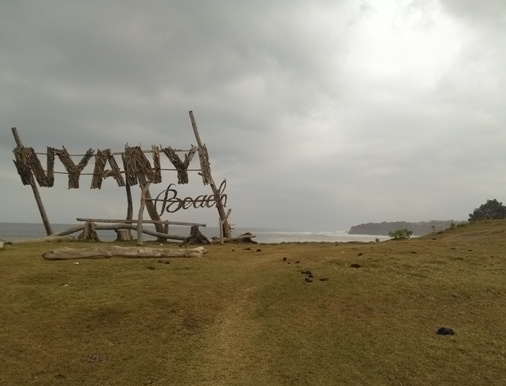
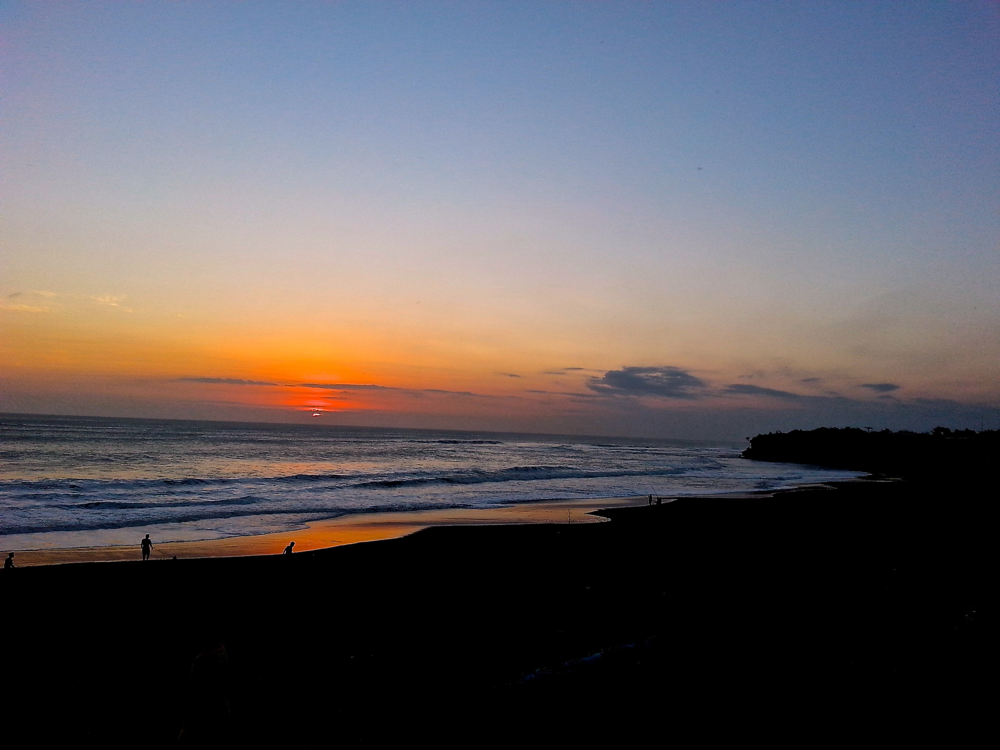
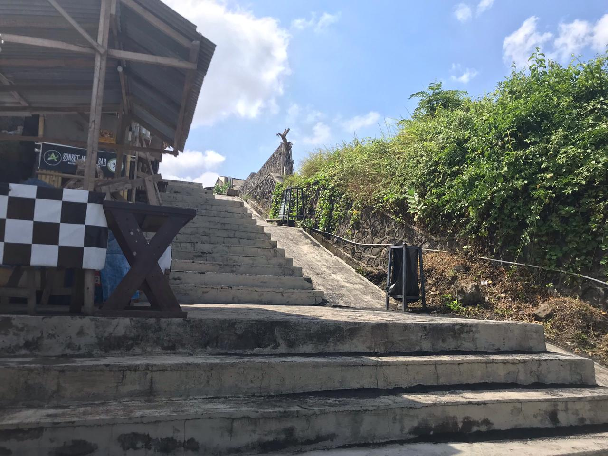
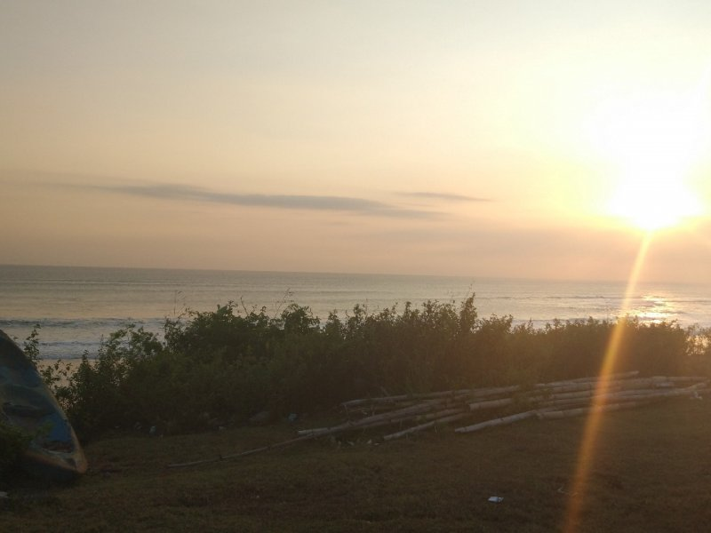

Pantai Nyanyi terletak di Dusun Nyanyi, Desa Beraban, Kecamatan Kediri, Tabanan,
Bali. Pantai Nyanyi diapit oleh objek wisata populer di Bali yakni Tanah lot dan Pantai
Mengening. Pantai ini menghadap ke arah selatan, sehingga Anda dapat melihat sunset
maupun sunrise dengan menghadap timur atau barat Pantai Nyanyi.
Pantai Nyanyi cukup sepi dari kunjungan wisatawan.
Sehingga pantai ini juga termasuk pantai yang belum tersentuh. Panorama alam pantai masih sangat alami,
sepanjang tepian pantai terdapat pepohonan hijau.
Keunikan Pantai Nyanyi
Beberapa pantai yang berada di Pulau Bali memiliki keunikan tersendiri dan memiliki ciri khas
masing-masing.Seperti Pantai Nyanyi ini tidak kalah unik dengan pantai lainya di Bali.
Pasir Pantai
Pasir pantai yang berwana hitam pekat memiliki daya tarik tersendiri
Ombak

Memiliki gelombang ombak yang keras,membuat tempat ini cocok bagi perselancar yang ingin mencoba hal yang baru
Luas

Memiliki hamparan Rumput yang luas,indah dan memiliki luas pesisir pantai membuat sangat cocok sebagai lokasi foto
Pemandangan

Memiliki pemandangan tebing karang dan bebatuan karang yang memiliki keunikan tersendiri
Foto
Bebrapa Koleksti Dokuemntasi Dari Pantai Nyanyi
Pasir Hitam

Tangga menuju pantai

Sunset dari Pantai Nyanyi
Memiliki pemandangan tebing karang dan bebatuan karang yang memiliki keunikan tersendiri